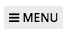
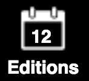
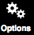

How to Log In
• Go to http://www.staradvertiser.com/ and click on the LOG IN button found on the upper right of the website.
• Once you are logged in, click on PRINT REPLICA from the top menu and it will route you to the Print Replica page.
• For users on mobile browser, you may find the PRINT REPLICA option inside the MENU list  .
How to Log Out
• Click on the Editions icon  and the Editions window will open.
• Click on Account tab and click the Log out button.

Reading the Article
• Hovering over the paper highlights an article.
• Clicking on an area of the page image displayed on the left side will load that content into the right side.
Accessing Links
• Clicking on the article's page links shows the continuation page of the article as it is on the physical print.
• If the link is for an outside source, such as another website, it will open a new tab for the said link.
Changing Font Size
• When an article is loaded for viewing in the right side of the screen, several control icons will appear above it.
• Click on the Increase Font / Decrease Font icon to adjust the font.
Changing the Page
• Pressing the arrows on the right and left sides of the page image will change pages.
• You may also click on the next section arrows to jump to the next or previous section.

Zooming my View
• On Browse mode , single click/tap on the page image will zoom in or out. Double click/tap will open the content in Index viewing mode.
• On Index viewing mode , double click/tap will zoom in the area.
Search Past Editions
• To access previous issues, click on the Editions Icon at the right-side panel and select from the recent editions listed.
• If you wish to access previous edition not on the list, you may search by clicking on the "Search the Archives" and select a date.
Print / Download / Share an Article
• When an article is loaded for viewing in the right side of the screen, several control icons will appear above it.
• The Print icon offers a quick way to print.
• After clicking the print icon, the printer set-up should pop-up.
• To share an article, the share icon will open a Sharing menu which allows you to select from several methods (Email, Print, Facebook, Twitter, etc).
Print / Download / Email a Screenshot
• To print, download, or email a portion of the page, you should be on "Browse" mode.
• Click on the share icon that will appear on the upper right.
• Crop the portion you wish to share and click print/download or email.

Listen to an Article
• To listen to an article, while on Index viewing mode , click on an article you want to listen.
• On the right side, click Listen to Article icon from the top control area, then a play button will be available for you click and start the audio.
Translate an Article
• To translate an article, while on Index viewing mode , select the E-Notify tab.
• On the right side, click on the "Translate to" dropdown and select the desired language.
Setting my Email Notifications with E-Notify
• From the Options menu  , click on the E-Notify tab. This is where you can enter the keywords and set your preferences by clicking Activate.
• For detailed instructions on how to enter multiple terms click HELP! or this link.
Locking Content on Browse Mode
• Enabling the "lock" will prevent your ability to click/tap on content in Browse mode and have it open in Index viewing mode.
• If you prefer to read all pages in our graphical Browse mode, you may choose to "lock" the mode so that you do not accidentally cause the system to switch to Index viewing mode.
• Even if "locked", you can still open content in the Index viewing mode by selecting the Index icon from the main control bar on the right.
• To enable lock, hover over the Browse mode and click on the Lock icon.
What is the Pages icon for?
• From the Pages Mode you can see small images of all pages in the edition you are viewing. This is an easy way to quickly scan through the entire publication. Click on any page image to open it for viewing. Most publications also allow downloading pages as PDF files from this viewing mode.
What is the Marketplace
• From the Options Menu you can see the marketplace tab.
• This is where you can easily view all ads or search anything from the classified ads of the selected edition.